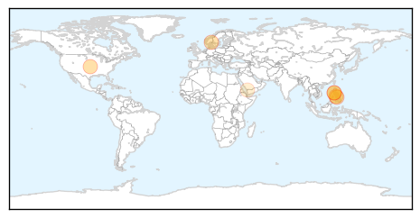
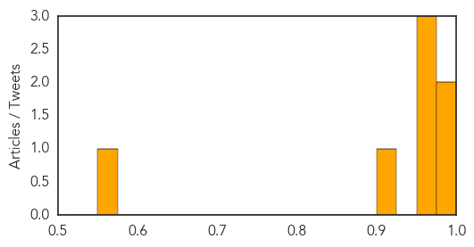
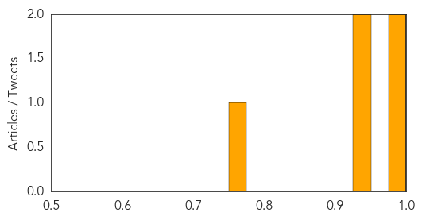

MERS
30-Day Web Trend
14 alerts, 0 warnings
30-Day Twitter Trend
4 alerts, 0 warnings
Article Locations
Article Confidences
Top Articles:
- 1.000
- Public Health Notice: Middle East Respiratory Syndrome Coronavirus (MERS-CoV)
- 0.994
- News Scan for Feb 17, 2015
- 0.971
- Report guests with MERS-CoV symptoms, resort owners asked
- 0.967
- Philippines wants compulsory testing for Mers
- 0.952
- Negros Oriental
- 0.909
- (MERSCOV monitoring:) Swab results on 4 plane passengers out on Feb. 19
- 0.567
- Sudden upsurge of coronavirus: A serious threat to umrah pilgrims, warn health experts
Top Tweets:
-
No tweets found for Feb 18, 2015
Cholera
30-Day Web Trend
0 alerts, 0 warnings

30-Day Twitter Trend
0 alerts, 0 warnings

Article Locations

Article Confidences
Top Articles:
- 0.991
- Comment: Heed council's cholera warnings
- 0.988
- Kenya : For cholera, prevention always better than cure
- 0.946
- Haiti cholera victims file new lawsuit against UN -The Tico Times
- 0.943
- Researchers scour Italian cemetery for DNA of ancient strains of cholera
- 0.775
- GHS alerts possible cholera outbreak in Brong-Ahafo
Top Tweets:
-
No tweets found for Feb 18, 2015